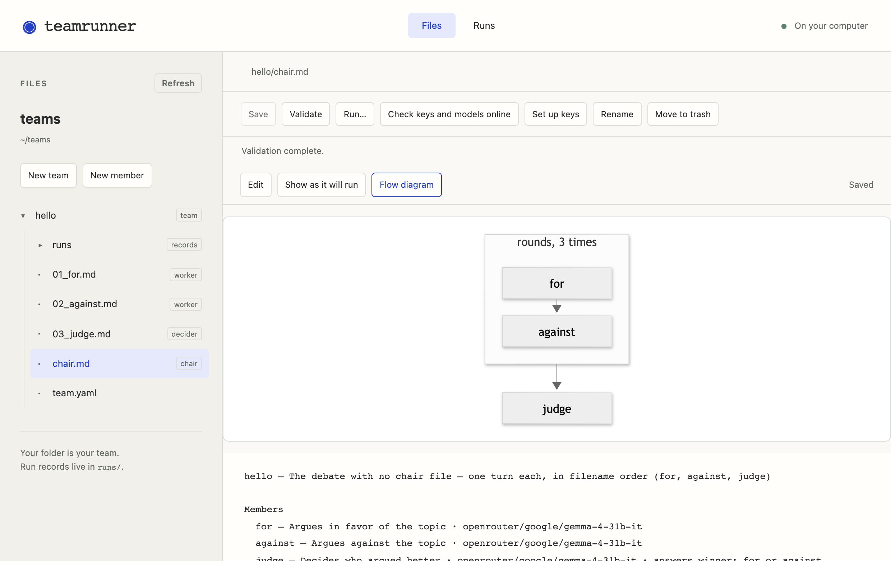

Step 4Take control of the flow
A real debate has rounds. Who acts when is the job of the team's chair, a file called chair.md holding the meeting's script. Make hello/chair.md with these lines:
With a file of hello selected, choose New member, name it chair.md, and replace what is in it with the lines below.
# Three rounds of for and against, then the judge decides. rounds(*3) -> judge rounds = for -> against
a -> b means one after the other, rounds(*3) repeats a step three times, and rounds = … says what that step is. Lines starting with # are notes for people. Rehearse it: seven turns now, where there were three.
Save, then rehearse with Run…. Flow diagram draws the flow, and reads the team back in plain words below it:

teamrunner run hello --rehearse
explain reads the team back in plain words, or draws the flow in your browser:
teamrunner explain hello
teamrunner explain hello --diagram
The debaters' words still say they speak once. The example multi_agent_debate is this team finished, with words written for rounds. Copy it into a team called debate; the next step builds on it.
New team, debate, from multi_agent_debate, and look at its Flow diagram.
teamrunner new debate --from multi_agent_debate
teamrunner explain debate